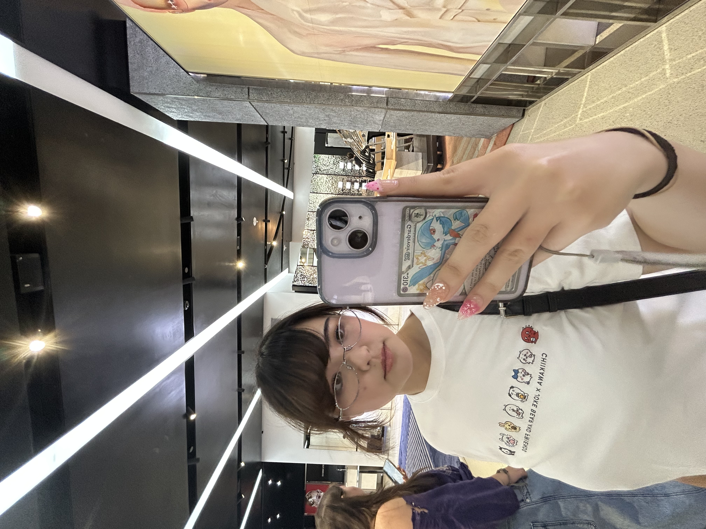

Hi! My name is Mayuko Ramsell and I am a 3rd year Graphic Design student at San José State
University. I
transferred to SJSU from Las Postias Community college, in which I earned an associates degree in
Language
Arts and Communication as well as Social and Behavioral Sciences. Although I have been drawing my
whole life, my
path in the Graphic Design field did not begin until entering SJSU.
I am a Japanese American, First-Generation college student. I grew up in the Bay Area and have been
heavily
involved in the Asian Community in my hometown here in the states through various events that celebrate Asian Heritage.
I have
also been heavily involved in my Japanese heritage, often visiting my hometown in Japan during the summer. As a
result, many of the cultural influences reflected in my pieces tend to be related to Asian Culture.
Growing up, video games played a significant role in my creativity, which has led me to pursue a
career in
the video game field. Video games' ability to create an interactive and immersive experience has
influenced me
as an artist to pursue this world and create a world for anyone to escape into. As the world of
interactive media
continues to evolve as technology changes, I aim to continue to create a world for people around the
world
to enjoy and play through the joy of human and fantastical experiences.